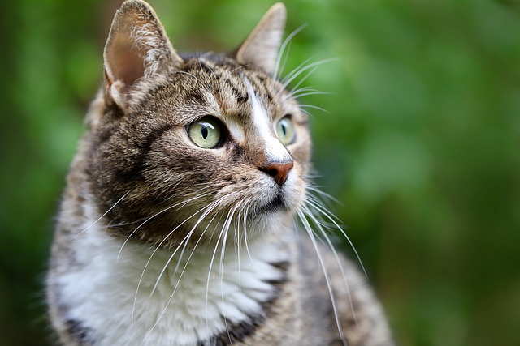

Image by Annette Meyer from Pixabay
Download from the website here
This is a high-resolution picture of a tabby cat enjoying being in the outdoors, which was also taken by the author, Annette Meyer, from the Pixabay website.
Sound Effect by DRAGON-STUDIO from Pixabay
Download from the website here
This is an audio of a cat purring for approximately 11 seconds by the author, DRAGON-STUDIO, from the Pixabay website.
Download from the YouTube website here
This is a YouTube video of a cat named Kiki, who is inside a small cardboard box, lounging while her owner, who owns the YouTube channel called Kiki The Dream Cat, starts recording the video as she soon begins to pet Kiki, which makes her purr in this video.